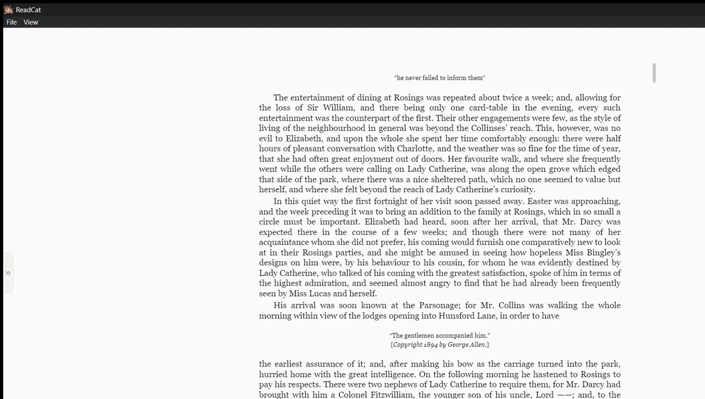

ReadCat
PDF and EPUB reader for Windows · $4.99
An offline reader for PDF, EPUB, DOCX, Markdown and TXT. No account, no ads, no telemetry. It remembers where you stopped in every file.
Hard part Zooming a PDF re-rendered the page on every wheel tick. I split it into an instant CSS preview plus one sharp render when the wheel settles, so zoom feels continuous.
- Electron
- React
- pdf.js
- epub.js
- MSIX